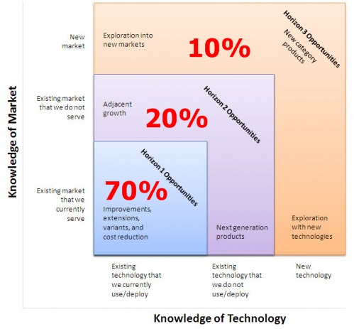

Das Bild von den drei Horizonten zeichneten erstmals die McKinsey-Berater Merhdad Baghai, Stephen Coley und David White in ihrem 1999 erschienen Buch The Alchemy of Growth. Fortgesetztes Wachstum gelänge einer Firma nur, wenn sie sich gleichzeitig den augenblicklichen Umsatzbringern, aussichtsreichen neuen Geschäftsmodellen und jenen Ideen widmet, die sich erst in Zukunft auszahlen werden.
1. Horizont: Zielt darauf ab, das laufende Geschäft zu verbessern und im Wettbewerb zu bestehen. Vorhandene Produkte und bekannte Technologien werden weiter verbessert.
2. Horizont: Bestehende Kompetenzen werden für den Eintritt in neue Märkte genutzt.
3. Horizont: Besteht aus Innovationen, die die Industrie nachhaltig verändern. Hier sind die disruptiven Technologien anzusetzen. Diese entstehen am unteren Ende des Marktes, wo sie zuerst niemand wahrnimmt. So werden ganze Branchen umgekrempelt.
Hier ein Bespiel für das Drei-Horizonte-Modell: Nehmen wir an, wir sind Autohersteller und produzieren Benzin und Dieselautos:
1. Horizont: Verbesserung der Benzin- und Dieselautos durch Einsparung von Kraftstoff.
2. Horizont: Export der bestehenden Autos und Infrastrukturen in andere Märke. Annahme: In Deutschland ist die Produktion und der Verkauf gelagert. Diese Technologie müssen wir nutzen, um in andere Märkte einzudringen.
3. Horizont: Schaffung einer separaten Forschungsabteilung, die den Elektromotor entwickelt und den Benzinmotor disruptiv verdrängt.
Es gibt nun in Organisationen eine natürliche Arbeitsteilung. Jeder Horizont erfordert ein bestimmtes Mindset, sowie damit verknüpfte Fertig- und Fähigkeiten. Eine gute Metapher, um die Arbeitsteilung zu verstehen sind die Rollen "Pionier", "Siedler" und "Städteplaner":
Der Pionier fühlt sich wohl, wenn es unsicher zugeht, die große Zukunft blüht, wenn er Experimentieren (und dabei auch Scheitern darf), wenn Kundennutzen erst mal im Hintergrund steht und gar nicht klar ist, ob es überhaupt einen Markt gibt.
Der Siedler mag Märkte, die am Wachsen sind, Produkte mit einem gewissen Reifegrad, die stückweite Verbesserung des Bestehenden, im engen Austausch mit Kunden zu sein und Feedback zu bekommen.
Der Stadtplaner ist in seinem Element, wenn die Dinge wohl definiert, stabil und standardisiert sind, wenn die Märkte schon gut durchdrungen und Entscheidungen auf Basis guter Analysen getroffen werden.
"Und was ist nun gut für ein Innovations-Team? Nur Pioniere, nur Siedler oder Stadtplaner? Von jedem etwas! Denn gerade Meinungen und Ansichten, die eher weit auseinander liegen, führen zu besseren Ideen und Innovationen. Diversität ist wichtig, damit möglichst viele Aspekte mit einbezogen werden und die Innovation letztendlich ein wirkliches Problem löst." Quelle: adginnovation.de
Nicht alle sind in jedem Horizont unterwegs. Eine gesunde Aufteilung soll das "70-20-10-Modell" vermitteln:

Quelle: http://timkastelle.org
Damit das Innovations-Team bzw. das Innovationsunternehmen bestmöglich gemeinsam arbeiten kann, benötigt es eine gemeinsame Sprache. Hieraus ergibt sich ein Dilemma. Jeder Horizont bringt seine eigene Sprache mit, die nur bedingt (wenn überhaupt) mit denen der anderen Horizonte kompatibel ist. Um sich nur mal exemplarisch, und sicher auch überspitzt, einen Eindruck zu verschaffen, wie die Sprache des 3. Horizonts auf die Kollegen die im Mindset des 1. Horizonts denken, wirkt, dient der MEGATRENDS GENERATOR. Dieser kann stellvertretend für alle Richtungen verstanden werden! Die Sprache des 1. Horizonts wirkt auf das Minset des 3. genauso.
Im Bewusstsein über die Existenz dieses Dilemmas können wir in zukünftigen Diskussionen versuchen andere Worte und Erklärungen zu verwenden, die in jeweils die anderen Horizonte zielen und für Ausgleich sorgen.
Übrigens... Der Megatrends Generator speist sich aus den Fachwörtern und Wortneuschöpfungen der sog. Megatrend-Map. Die dort verwendeten Worte stehen hier beispielhaft für die Sprache des 3. Horizonts.
Für alle die von sich sagen, dass sie in allen 3 Horizonten denken, oder sich im 2. am wohlsten fühlen, denen sei das folgende Video von Prof. Kruse sehr empfohlen. Denn ihr seid die "Broker" => die Netzwerker... die, die alle Horizonte mit einander verknüpfen und produktive Kreativität in die Wirklichkeit holen: